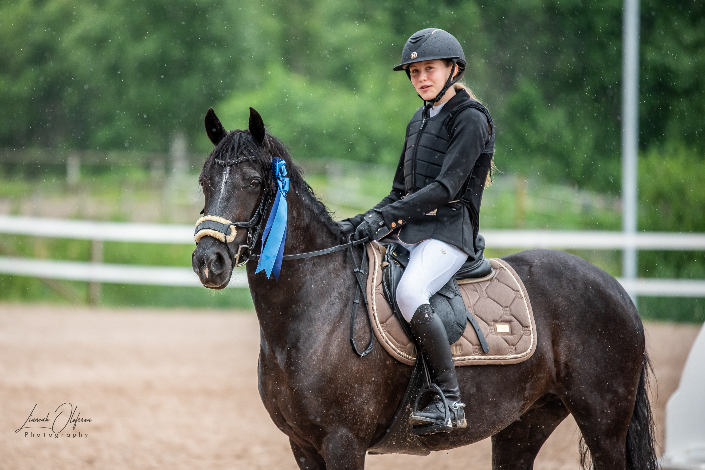
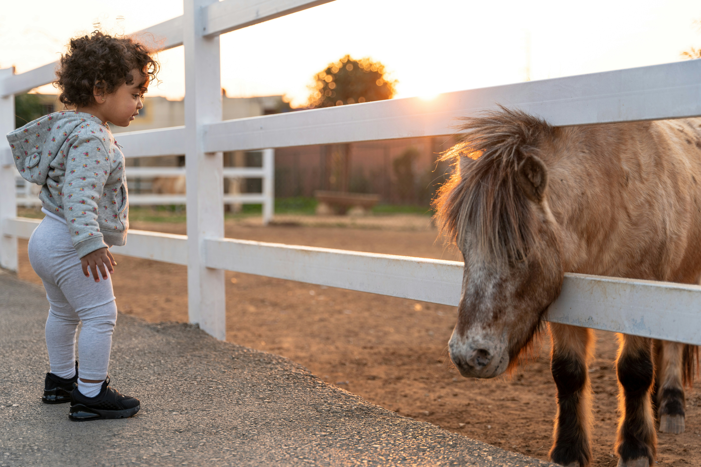

Nyheter

2026-10-01
Nike och Bella tvåa i Härnösand
Vi säger grattis till Nike Svensson och Bella som tog sin första placering i LB under lördagens hopptävling i Härnösand! De slutade på snabbast tid i grundomgången och ett tidsfel i omhoppningen.

2026-09-15
Ny grupp för de allra minsta
Nu planerar Blåklockans RK för en ny grupp av hästlekis för de allra minsta barnen. Vi kommer både bekanta oss med hästarna och rida korta turer med ledare på våra tryggaste ponnysar. Gruppen kommer startas på söndagar klockan 15:30.